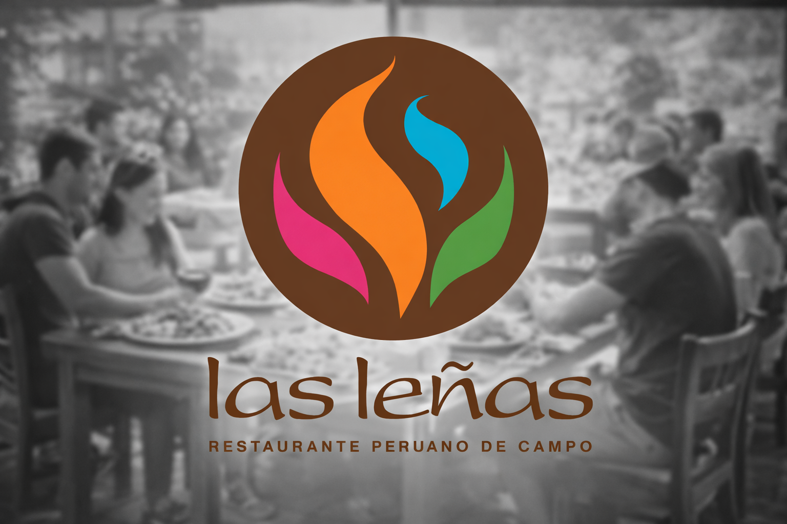
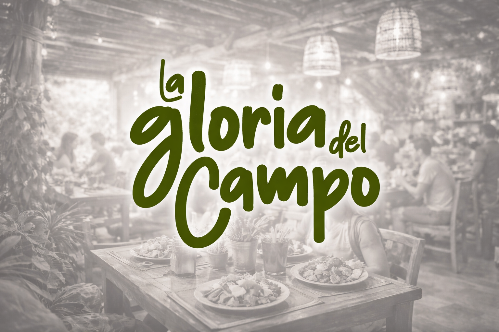
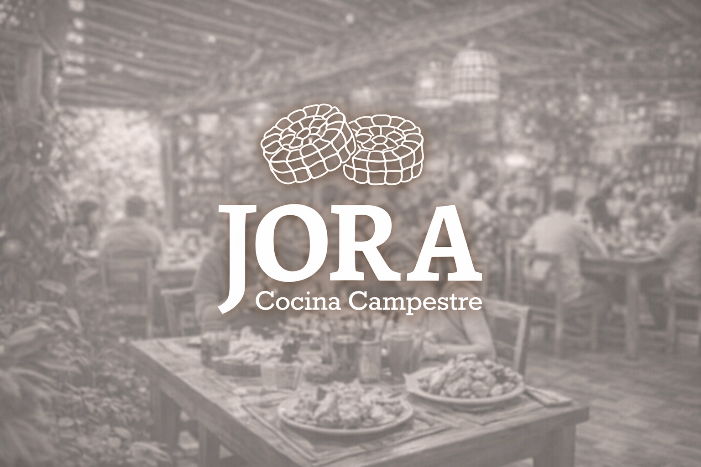
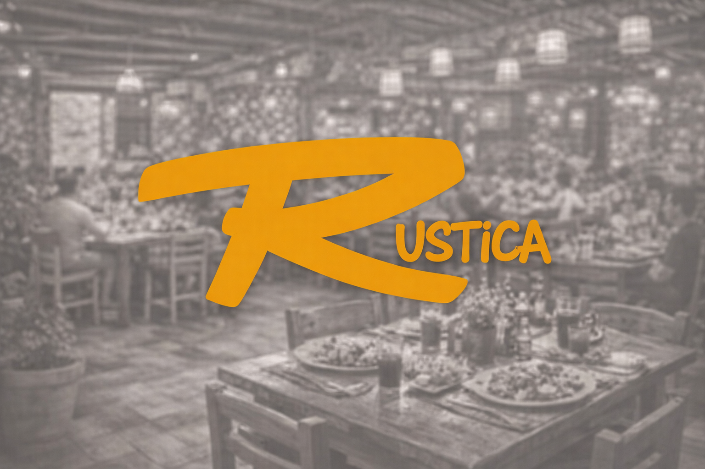
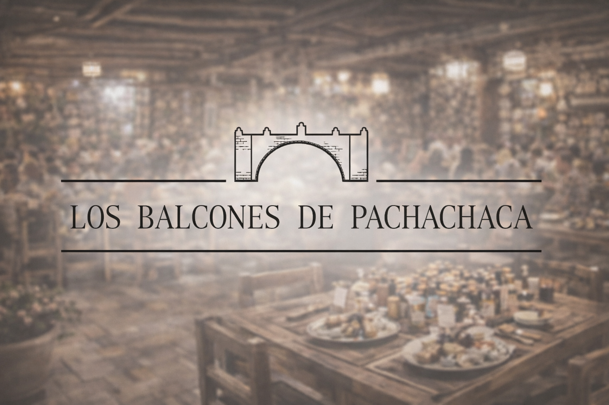
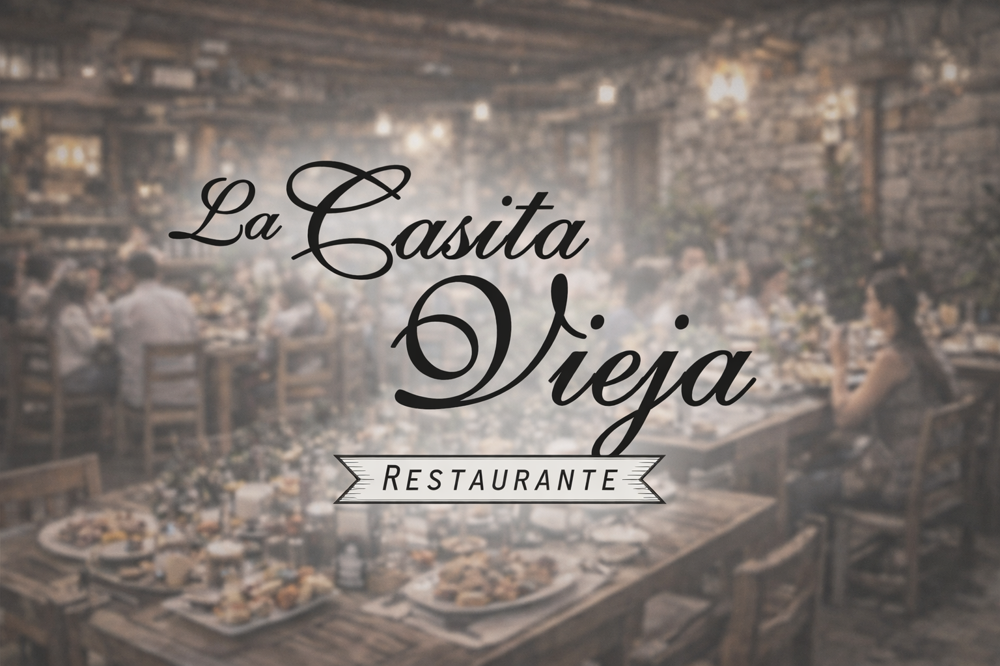
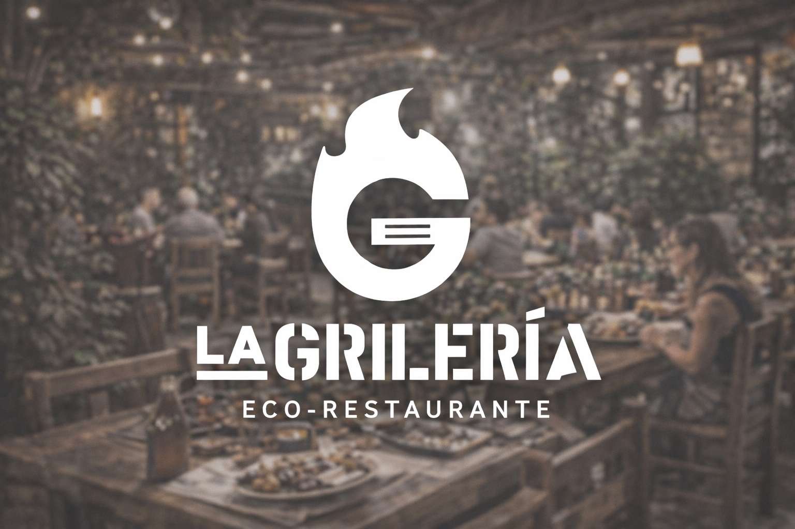

Campestre
Hacienda Las Leñas
Ambiente familiar con amplios jardines, platos criollos y carnes al cilindro ideales para almuerzos de fin de semana.
Explora una selección de restaurantes ficticios con estilos variados: cocina campestre, parrillas, cocina peruana, sushi bar y propuestas gourmet inspiradas en el espíritu turístico de Pachacámac.

Ambiente familiar con amplios jardines, platos criollos y carnes al cilindro ideales para almuerzos de fin de semana.

Sabores tradicionales peruanos en un entorno rústico elegante, con especialidad en pachamanca, chicharrones y caldos.

Una propuesta contemporánea que mezcla insumos locales, coctelería de autor y una presentación moderna con esencia peruana.

Espacio amplio y relajado con pizzas, parrillas, piqueos y bebidas, ideal para grupos de amigos y reuniones familiares.
Rolls, makis, tablas y coctelería en un ambiente moderno que combina cocina nikkei con un toque fresco y turístico.

Restaurante de espíritu tradicional con platos criollos, postres caseros y una terraza acogedora para tardes familiares.

Sazón casera en una casa de campo remodelada, con menú familiar, comida reconfortante y atención cercana.

Especialistas en carnes a la parrilla, hamburguesas artesanales y piqueos para compartir en un ambiente vibrante.